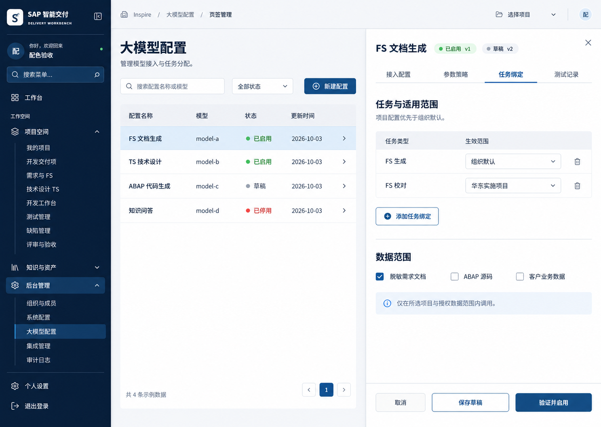
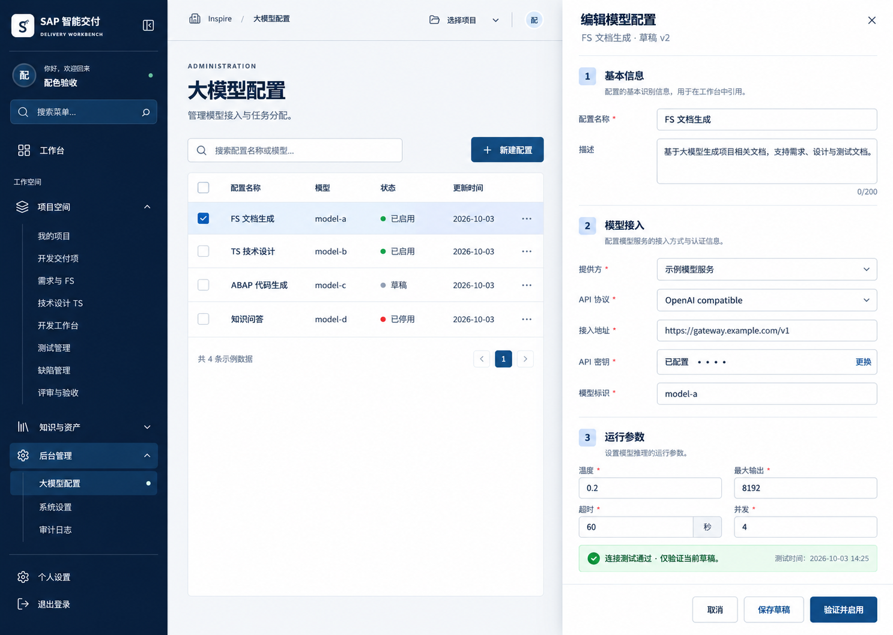
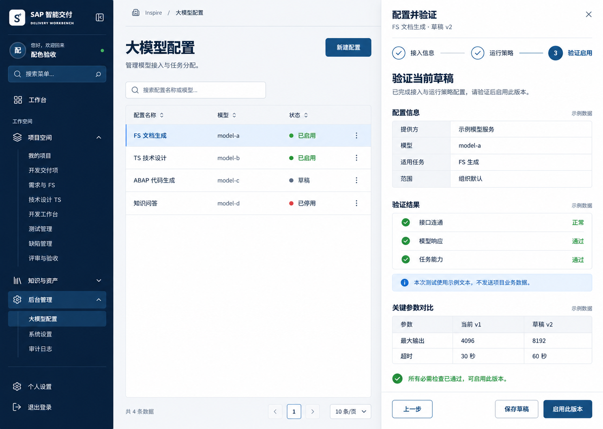

SAP 智能交付平台 / 设计评审 / 2026-10-03
大模型配置
交付目标：管理员集中维护模型接入、运行参数与任务适用范围；业务任务在组织及项目授权内解析到明确的生效版本。三套界面统一使用列表清单 + 右侧抽屉。
状态：待选型设计稿。图片中的模型、测试结果和状态均为示例；未执行数据库变更、未接入真实模型。数据库采用现有
PostgreSQL / app schema，界面沿用当前海军蓝侧栏与浅色工作区。
查看完整 SQL 设计稿（字段、类型、索引及应用层约束）
一、数据库设计
采用五张新表，复用组织、项目、用户及审计表。当前每条配置维护一个模型接入快照，可跨任务复用；同一凭据可供多个配置引用。提供方先使用适配器枚举，无需为少量静态提供方单独建目录表。
| 表 |
用途与关系 |
主要字段 |
app.llm_credential |
保存密钥密文或外部密钥引用；组织 1:N 凭据，凭据 1:N 配置版本 |
id / organization_id / name / storage_type / secret_cipher / encryption_key_id /
secret_ref / status / created_by / created_at / revoked_at
|
app.llm_config |
稳定的配置身份和当前生效版本；配置 1:N 版本 |
id / organization_id / code / name / description / status / active_version_id /
row_version / created_by / updated_by / created_at / updated_at
|
app.llm_config_version |
不可变版本快照，保存接入、参数、数据与上下文策略 |
id / config_id / version_no / provider_code / api_protocol / base_url / model_id /
deployment_name / api_version / credential_id / auth_mode / parameters /
required_capabilities / data_policy / context_policy / timeout_ms / max_concurrency /
max_retries / change_note
|
app.llm_task_binding |
版本 1:N 任务绑定；project_id 为空代表组织默认 |
id / organization_id / version_id / project_id / task_type / is_active |
app.llm_test_run |
版本 1:N 测试；分别记录连通、生成和能力验证 |
id / organization_id / version_id / test_kind / status / adapter_version /
credential_fingerprint / observed_capabilities / latency_ms / input_tokens /
output_tokens / error_code / safe_message / started_at / finished_at / expires_at /
created_by
|
公共主键使用 UUID；时间使用 timestamptz，界面按用户时区显示；版本号和 row_version
为并发控制依据。所有跨配置/凭据/项目关联都携带 organization_id，防止跨组织引用。审计通过现有
app.audit_event 记录。
参数与数据策略
| 字段 |
建议内容 |
校验 |
| parameters |
temperature、top_p、max_output_tokens、reasoning_effort 等适配器支持的选项 |
按协议和模型能力显示与校验；不支持的参数不发送。温度不是通用必填项。 |
| required_capabilities |
例如 structured_output、tool_calling、vision |
按任务需要声明并逐项验证，不从模型名称猜测能力。 |
| data_policy |
allowed_classes：脱敏需求文档、ABAP 源码、客户业务数据等显式白名单 |
空数组默认拒绝业务数据；实际权限取配置策略与组织/项目授权的交集。 |
| context_policy |
上下文 token 预算、历史消息上限、检索片段上限与截断方式 |
按模型窗口验证；不得静默截断关键业务输入；超出策略返回明确错误。 |
| 运行参数 |
timeout_ms=60000；max_concurrency=4；max_retries=0 |
建议初始值；重试只用于可重试故障，不能重试鉴权或业务授权错误。 |
唯一性、生效与并发
-
组织内配置编码唯一；同一配置版本号唯一。同一组织默认任务最多一个活动绑定，同一项目任务最多一个活动绑定，均使用部分唯一索引约束。
-
编辑、密钥轮换和任务绑定变更均新增版本及绑定快照；保存草稿不切换
active_version_id。列表可同时显示“已启用 v1”和“有草稿 v2”。
-
发布需要同版本的连通、生成和所需能力测试通过且未过期，建议有效期 30
分钟；适配器变化、凭据撤销或密钥版本变化使验证失效。
-
发布在单一事务中锁定组织与配置、核对
row_version、取消本配置旧绑定、激活新绑定、切换生效指针并写审计。其他配置占用同一任务范围时提示冲突，不静默覆盖。
-
运行时先匹配项目绑定，再匹配组织默认；匹配后仍验证启用状态、版本一致性、凭据及数据权限。授权失败直接阻断，不借默认配置绕过限制。无有效配置提示“尚未配置可用模型”。
-
停用前展示受影响任务及项目，并提示是否回到组织默认；停用只阻断后续调度，运行中任务持有原版本。紧急撤销凭据应阻断后续外部请求。回退也重新验证并原子恢复历史绑定。
-
数据库复合外键与唯一索引保证结构；版本不可变、活动绑定与指针一致性、发布权限由服务端事务及正式迁移中的权限/触发器共同保证。当前
SQL 是评审稿，尚未做执行验收。
密钥、权限与可追溯性
API Key 使用认证加密，主密钥放在数据库之外；外部密钥引用固定具体版本。读取接口仅返回
credentialReady，禁止返回明文或密文。仅授权管理员可更换密钥、发布及停用，其他角色按项目权限只读。测试使用固定合成样例，不自动发送业务文档；日志不存原始请求头、提示词或模型回答。服务端对接入地址检查协议、DNS、白名单及重定向，私有地址单独授权。
二、共用页面与交互规则
入口：后台管理 →
大模型配置。列表完整列为配置名称/编码、提供方、模型、适用任务与范围、状态/版本、最近验证、更新时间、操作。抽屉打开时保留名称、模型、状态等关键列，其余按宽度隐藏；关闭后恢复原筛选、页码和滚动位置。
| 操作/状态 |
行为 |
| 搜索与筛选 |
按配置名、编码或模型搜索；按提供方、任务、状态、组织/项目范围筛选。服务端分页，默认更新时间倒序。
|
| 新增/编辑/查看 |
统一打开右侧抽屉；编辑已启用项默认创建草稿；只读角色隐藏写操作。提供方、协议、接入地址和模型为必需项，凭据要求由认证模式决定。
|
| 抽屉结构 |
固定标题和底部按钮，内容区独立滚动，建议宽度
560–720px；窄屏抽屉可全宽。Esc/关闭按钮在有未保存修改时提示；焦点进入抽屉、限制在抽屉内并在关闭后归还。
|
| 密钥 |
只显示“已配置”；更换时出现密码输入框。取消不保存；复制配置不复制密钥明文，须明确选择已授权凭据。
|
| 验证与启用 |
测试中显示进度并阻止重复请求；失败显示脱敏原因和重试入口。保存草稿始终不影响当前版本；启用需确认变更及任务影响。
|
| 错误与并发 |
表单错误在字段旁显示并定位首个错误；版本冲突返回
409，允许刷新并对比，不覆盖他人修改。无权限、空列表、加载失败与无测试记录分别有明确文案。
|
| 状态 |
启用/停用/草稿与测试通过/失败/未测试分开；“已启用”不代表服务当前健康。保存成功但发布失败时草稿仍保留。
|
三套图使用同一数据库及功能范围，仅抽屉组织不同。图片是布局示意，SQL
与上述规则是实施依据；生成图上的温度星号、简写协议和导航文字不作为强制字段或导航改造要求。
三、三套示意图
编号严格对应本轮聊天中图片的实际展示顺序，与旧版 docs/design-options/models-* 编号无关。
方案 1 · 页签管理
将接入配置、参数策略、任务绑定、测试记录分成页签。适合完整后台管理，字段扩展较容易；跨页签错误需用标记引导。建议优先选择此方案。

方案 2 · 分组表单
基本信息、模型接入、运行参数纵向分组，信息连续、日常编辑直接；字段多时滚动较长，任务绑定和高级参数可折叠展示。

方案 3 · 验证引导
抽屉内按接入信息、运行策略、验证启用逐步推进；适合首次接入，发布前集中展示参数差异；频繁修改需更多步骤。主页面始终保留配置列表。

四、范围与验收
本轮完成设计，不包含业务实现或生产数据迁移。首期建议包含接入、参数、任务分配、测试、草稿/发布/停用/回退与审计。用量计费、预算、自动备用模型路由另行设计；不从测试记录推算生产账单。
实施验收至少覆盖：跨组织引用被拒绝；同任务范围并发发布冲突；草稿不影响运行；测试结果不可跨版本复用；密钥不被接口回显；停用及回退影响明确；三个主要操作均通过抽屉完成。
生成方式：内置 ImageGen，现有 workspace-models.jpg
作为视觉参考。三份提示词的共同约束为中文企业后台、海军蓝现有配色、真实表格清单与已打开右侧抽屉；分别指定页签管理、连续分组表单、抽屉内分步验证。图中所有数据均为示例。